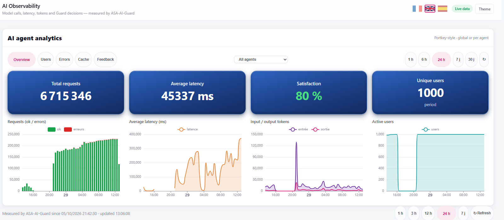
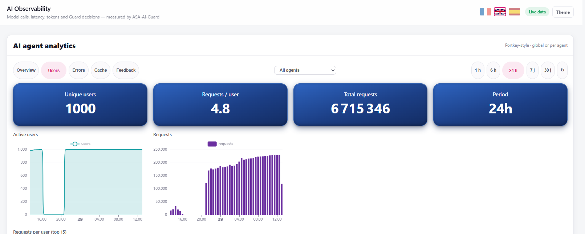
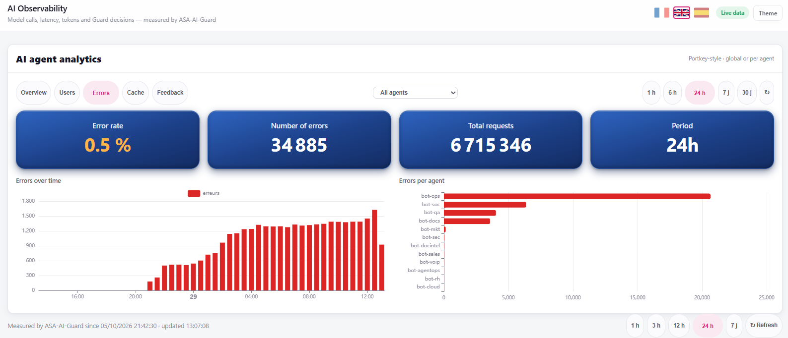
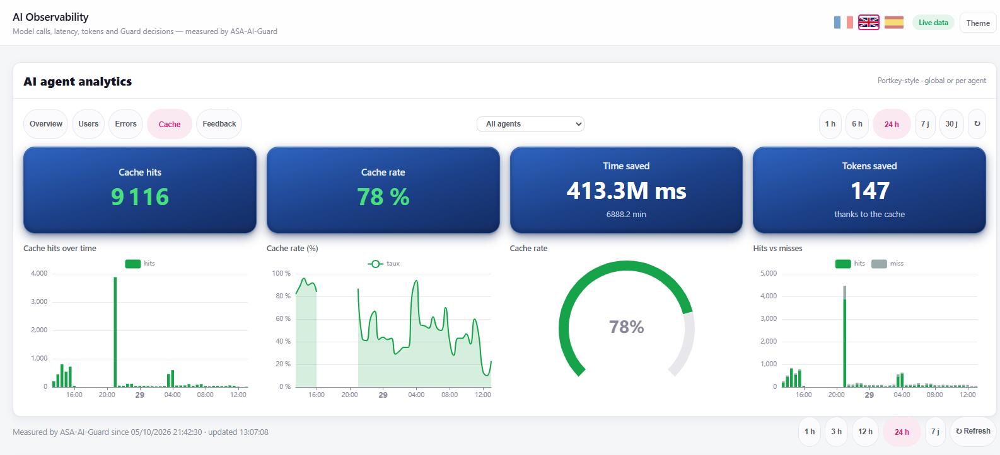
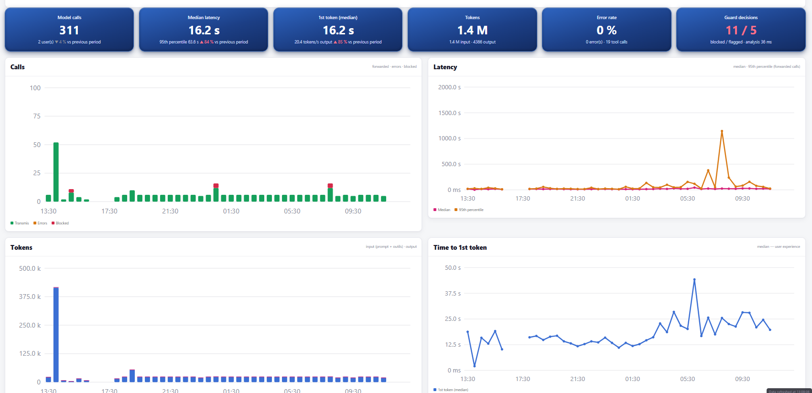
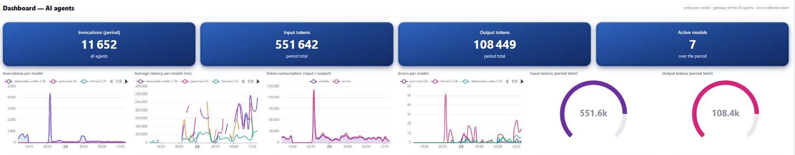
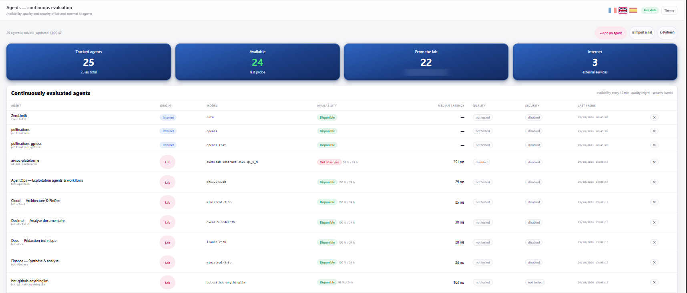
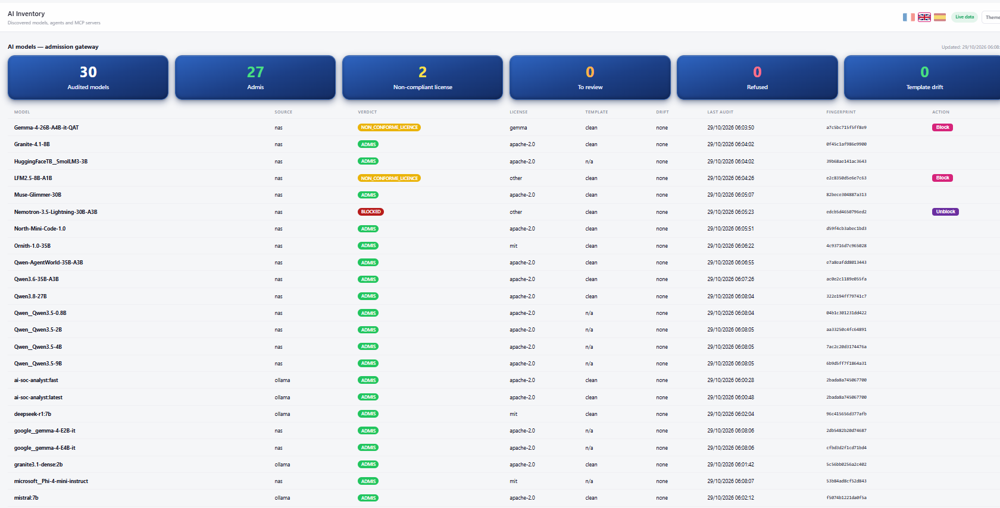

See every prompt, token and agent.
Hand your data to no one.
Your AI agents read your contracts, your tickets, your customer records. Most observability tools ship all of it to someone else's cloud. ASA-AI Observability runs entirely on your infrastructure: full visibility into latency, token spend, errors, cache savings, guardrail decisions and model compliance, with every byte staying inside your walls.
Your prompts are your crown jewels.
Why mail them to a stranger?
With SaaS observability, every prompt, completion and tool call is copied to a third party's servers, under their retention policy, their sub-processors and their jurisdiction. Sovereign observability keeps it all where it belongs: with you.
Typical SaaS observability
- Your prompts and outputs leave your network and sit in a vendor's multi-tenant cloud.
- Access you don't control: vendor staff, sub-processors and foreign legal requests.
- Usage-metered pricing: the more your AI scales, the bigger the observability bill.
- Compliance on trust: you audit a contract, not the system.
ASA-AI Observability, on-prem
- Zero data egress: telemetry is captured and stored on your own servers.
- Only your team holds the keys. No third-party processor in the loop.
- No meter on your own telemetry, and the cache cuts your token bill as you scale.
- Audit-ready by design for GDPR, NIS2, DORA and EU AI Act record-keeping.
Eight views. Total control.
Real screens from our live lab console, measured by ASA-AI-Guard, our on-prem AI gateway.
Every request, every millisecond, every token.
Requests, latency, input/output tokens and active users at a glance, globally or per agent. Here, a 24-hour lab stress test: 6.7 million requests from 1,000 simulated users, and the console kept counting.

Know who uses which agent, and how much.
Unique users, requests per user and top consumers. Spot shadow usage and chargeback costs to the right team.

Find the failing agent before your users do.
Error rate over time and errors per agent, so you know exactly which bot is breaking and when it started.

Stop paying twice for the same answer.
A 78% cache hit rate means 78% of repeated questions never hit the model. Thousands of hits and over 6,800 minutes of compute time saved in a single day.

Latency, time-to-first-token and guardrail decisions, measured.
Every model call passes through ASA-AI-Guard: median and 95th-percentile latency, time to first token, token volumes, and prompts blocked or flagged in milliseconds.

Seven models. One pane of glass.
Invocations, latency, token consumption and errors per model, so you route each task to the model that is fast, cheap and accurate enough for it.

25 agents, checked around the clock.
Availability every 15 minutes, quality every night, security every week, for lab agents and external AI services alike. You know the moment one goes dark.

No model reaches production without passing the gate.
Every model is fingerprinted, license-checked and screened for template drift before it is admitted. Non-compliant licenses get flagged, risky models get blocked in one click.

Bring your AI under control. On your own turf.
See ASA-AI Observability on a live environment in 30 minutes, then decide.
Screens captured on the ASA AI lab console. Figures include synthetic load testing.